CRS and TRS Reference Systems
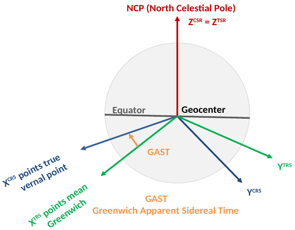
GAST - Greenwich Apparent Sidereal Time
- Key parameter for transforming CRS and TRS
- Mostly tied to time system/definition
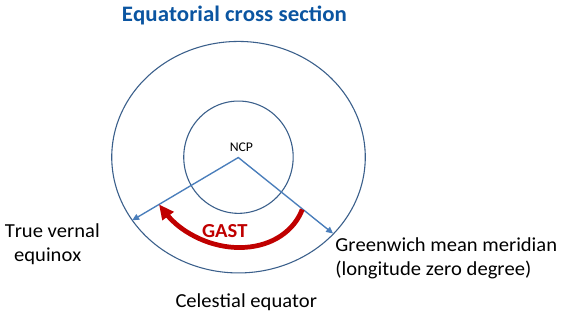
- Instant rotation vector of Earth changes orientation and magnitude due to various geophysical and planetary processes
Conventional Celestial Reference System
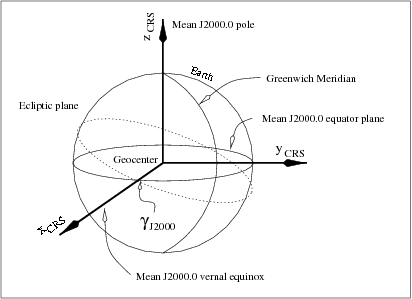
- Z^{CCRS}: direction of the earth mean rotation pole at J2000.0*
- Julian date: number of days passed from noon 01.01.4713 BC
- X^{CCRS}: Mean equinox at J2000.0 (intersection between J2000 mean equatorial plane and the ecliptic plane)
- Y^{CCRS}: RHS
- In CCRS, Earth's instantaneous rotation axis show regular motion relative to mean at J2000.0
Conventional Terrestrial Reference System
-
Z^{CTRS}: Conventional Terrestrial Pole (CTP)
-
X^{CTRS}: Intersection between equatorial plane and mean Greenwich meridian
- Orthogonal to CTP
- In Mean Greenwich meridian direction
- Established: International Time Bureau (BIE) observatory and maintained by IERS
-
Y^{CTRS}: RHS
-
CTP(/CIO): average locations of poles from 1900 to 1905
- In CTRS: Earth's instantaneous rotation axis shows irregular motions relative to CTP
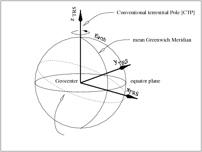
- In CTRS: Earth's instantaneous rotation axis shows irregular motions relative to CTP
Changes in Rotation orientation in two systems
- Instant Earth rotation axis changes orientation w.r.t. CCRS and CTRS
- Angular velocity fluctutates
- Important for time system and geophysical modeling Earth rotation
- Angular velocity fluctutates
- Changes in rotation orientation important for linking two systems:
- Accurate determination of reference frames
- Precise navigation and satellite orbits and tranformation between 2 systems
- Realisation of time systems
Transforming between CCRS and CTRS
- Precession & Nutation: Temporal variation of the Earth rotation vector in CCRS
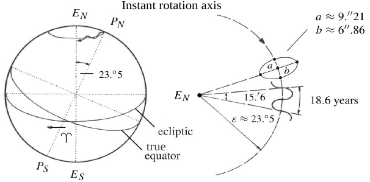
- P_NP_S: Earth's instantaneous rotation axis
- E_NE_S: line passing through North and South Ecliptic poles

r_{CTRS} = \bm{SNP}r_{CCRS}-
3 Rotations for transformation from CCRS to CTRS
-
\bm P: Precession
- Transforms mean equator and mean equinox at the time J2000.0 to mean equator and mean equinox at time t._- secular component (period 26,000 a)
- \bm P = \bm R_3(-z)\bm R_2(\vartheta)\bm R_3(-\zeta) (with precession angles)
- Models of precession angles include : IAU 1976, 1980, 2000, 2006
- z,\vartheta, \zeta dependent on T, T^2, T^3, with T=t-t_0 as the elapsed time from t_0 (J2000.0) from present time t
- Models of precession angles include : IAU 1976, 1980, 2000, 2006
-
N: Nutation
- Transforms mean equator and mean equinox at time t to true equator and true equinox at time t
- periodic component (period: 18.6 a-9.3d(1k different periods))
- \bm N = \bm R_1(-\varepsilon-\delta\varepsilon)\bm R_3(-\Delta \Psi)\bm R_1(\varepsilon) with
- (\Delta \varepsilon,\Delta\Psi): the nutation angles
- Including nutation in obliquity/nutation of longitude
- \varepsilon: obliquity of the ecliptic (instantaneous angle between true equator and ecliptic planes)
- Values exist e.g.: PREM - spherically symmetric elastic Earth model (IAU 1976, 1980,2000)
- Nutation observed by space geodetic techniques (VLBI) -> other combinations of data model usable
- (\Delta \varepsilon,\Delta\Psi): the nutation angles
- \bm N = \bm R_1(-\varepsilon-\delta\varepsilon)\bm R_3(-\Delta \Psi)\bm R_1(\varepsilon) with
-
By applying P & N rotations: Transformation of position vector from CCRS(J2000) to true CCRS/CEP (Celestial Ephemeris Pole)
-
S: Earth rotation and polar motion
- \bm S=\bm R_2(-x_p)\bm R_1(-y_p)\bm R_3(GAST)
- (x_p,y_p): coordinates of pole CTRS
- GAST: Greenwich Apparent Sidereal Times
- 3 Parameters are: Earth Rotation Parameters (ERP) (In CTRS; N&P: in CCRS)
- Cannot be modeled
- Computed using observation by international time and latitude service
-
-
ERPs and Precession and Nutation paramter: Earth Orientation Parameers (EOPs) (Variables in Geodesy and Geophysics)
Observing nutation periods and amplitudes
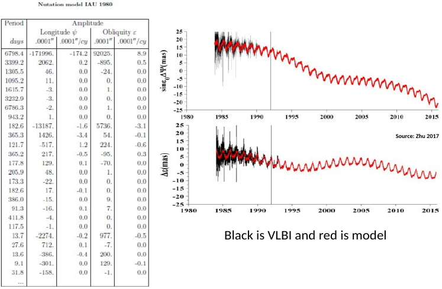
Instantaneous (true) CCRS or CEP
-
CEP is true one (instantaneous earth's rotation axis)
-
CEP origin is Earth's centre of mass
- fundamental plane is defined by true pole -> true equator
-
X-axis towards true vernal equinox (intersection between ecleptic plane an true equator plane)
-
If external forces absent: CEP: fixed pole in space
-
Position of CEP relative to the earth's crust
- changes due to irregular mass distribution of the earth and its variation (Polar motion)
-
If earth sperical and homogeneous: fixed pole in space
Greenwich Apparent Sideral Time - GAST
- First: Rotation equal to GAST -> transforming true CCRS to mean CTRS
- 2 other rotations: polar Motion Matrix (mean CTRS -> true CTRS)
\bm S=\bm R_2(-x_p)\bm R_1(-y_p)\bm R_3(GAST)
- GAST: Angle between Greenwich mean meridian passing the true equinox and represents rotation of Earth around CEP.
- \bm R_3(GAST): diurnal rotation matrix: diurnal rotation around the z-axis of true CCRS
- GAST: Expressed as difference dUT=UT1-UT from observations
- Applying GAST rotation: transform true inertial celestial system to Earth-fixed (terrestrial) system
Position vector in mean Earth-fixed system and still doesn't feel variations of Earth rotation due to polar motion.
Polar Motion
-
True Pole moves w.r.t CTP or CIP (Celestrial Intermediate Pole)
-
Polar motion is motion of Earth's rotational axis relative to its crust
-
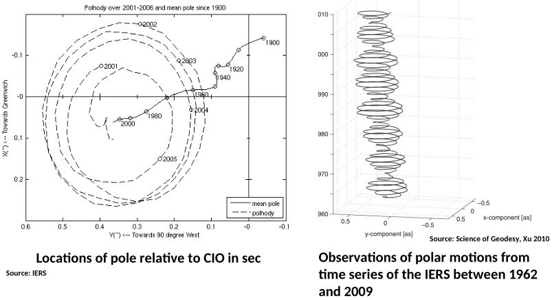
-
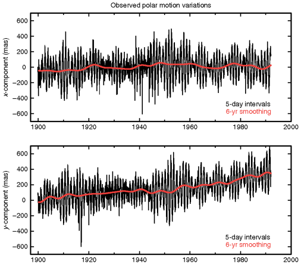
Causes
-
Forced Annual (365d) wobble with amplitude of 100 mas
- Mostly due to atmospheric, oceanic, hydrologic process (seasonal excitation)
-
Chandler wobble (period 433 d) & amplitude 100-200mas (free wobble)
-
Quasi-periodic variation on decadal timescale (amplitude: 30 mas)
- often called: Markowitz wobble + linear trend
-
linear trend (3.5mas/a)
- Direction towards ~79° W: Due to Glacial Isostatic Adjustment and present-day change in ice sheet mass and glaciers, plate subduction, mantle convection, upwelling mantle plumes, earthquakes
-
Smaller amplitudes - e.g. sub-daily to daily
-
X-coordinate of Pole
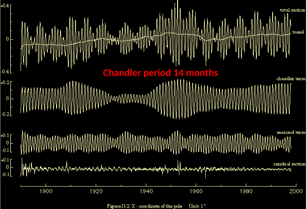
-
Y-coordinate of Pole
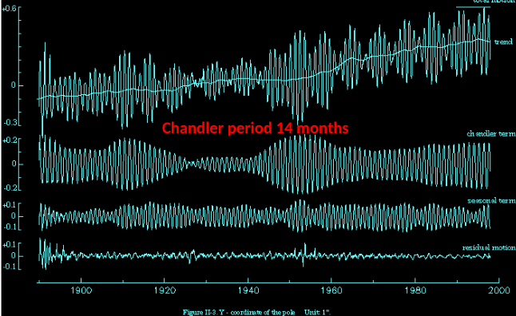
From CCRS to CTRS and vice versa
- For coordinate conversion: daily EOPs - based on models and observations
- e.g. for stars, satellites, observers on Earth
r_{CTRS} = \bm{SNP}r_{CCRS}- Determination of EOPs for maintaining/realising Earth Reference Systems.
- Monitoring EOPs for understanding geophysical processes and Earth rotation.
- Using EOPs for transforming 2 reference systems for application including GNSS positioning, orbit determination, satellite altimetry, satellite gravimetry etc.
- Data available online
EOP measurement techniques
| Technique | Pole positions | UT1 | LOD | Nutation parameters |
|---|---|---|---|---|
| GNSS | ✅ | ❌ | ❌ | ❌ |
| DORIS | ✅ | ❌ | ❌ | ❌ |
| SLR | ✅ | ❌ | ❌ | ❌ |
| VLBI | ✅ | ✅ | ✅ | ✅ |
- Problem: Earth rotation not distinguishable from rotation of satellite orbits
- GNSS provides accurate observations of \Delta UT1 and LOD but not absolute values
- VLBI only geodetic technique observing all EOPs
Transforming between CTRS and CCRS
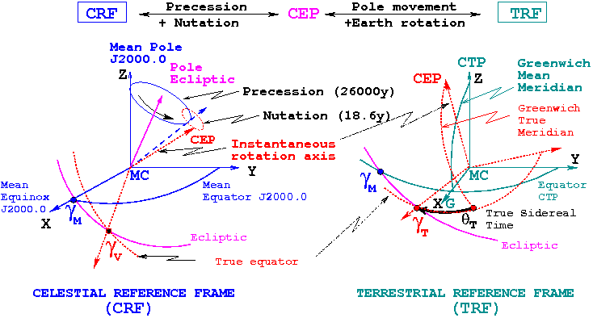